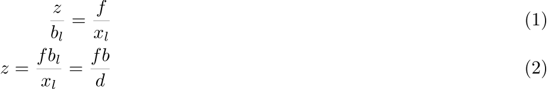

The primary function of the depth estimation algorithm is to take in a predicted focal length, and a pair of stereogram images and to produce an RGBD (Red, Green, Blue, and Depth for each pixel) image.
The focal length estimator should produce some expected of focal lengths. This focal length is assumed to be roughly the same for both cameras. We also expect to have 2 matching input stereograms, taken from cameras a reasonable distance apart, rotated to focus on a single focus target. These stereograms will most likely be somewhat noisy. There may also be slight variations in rotation, position, or scale between the two images (as they will most likely be scans of physical stereograms). There may also be some distortion due to inconsistencies in the focal length of the lense. This distortion is assumed to be negligible.
All of these different sources of error must be taken into account by the depth finding algorithm, and it must still be able to produce an accurate RGBD image. In later stages, this RGBD image will be used to find the distance between points in the image. We require the RGBD image to be accurate enough such that the measured distance is within one foot of the real distance.
As our goal is to determine depth from a stereogram image, it is useful to first consider how humans perceive depth as a stereogram camera setup is modeled after the human eyes. One easy observation is that objects appear smaller as they move further away. This is helpful, as if we know the size of an object we can easily determine it's distance using only one eye. However, in some circumstances where the sizes of objects are unknown this is not possible. In these cases, being able to see the same scene from 2 different angles at once can help to resolve the depth of unknown objects. In our depth finding algorithm, we do not know the exact size of many of the objects in our image, so it is necessary to use the information from both images in order to determine the depth of objects in our scene.
In order to talk more concretely about how a stereogram camera setup mirrors the human eyes, we need the correct mathematical tools. Homogeneous coordinates provide an extremely useful way to build upon the concepts of linear algebra to describe more types of transformations. For this first explanation of homogeneous coordinates, we will focus on 2D, but most of the concepts presented here can be easily extended to 3D as well.
In cartesian coordinates, a point in 2D is described by a vector with 2 coordinates, such as: ⟨x, y⟩. In homogeneous coordinates, this same point can be represented by any vector of the form ⟨xZ, yZ, Z⟩, where Z is a non-zero real number. This new coordinate, Z, acts as a normalization factor: scaling our vector by any non-zero scaling factor yields the same point. To convert back to cartesian coordinates, we only need to divide by the scaling factor.
What happens when our normalization factor is zero? Intuitively, when we take a point of the form ⟨x, y, 0⟩ and we divide by the scaling factor, we end up with our x and y coordinates at positive or negative infinity. Therefore a vector of the form ⟨x, y, 0⟩ can be seen to represent a point infinitely far away in the direction ⟨x, y⟩ or ⟨ − x, − y⟩. We will call this concept a point at infinity. If we extend this concept to higher dimensions, we can also have lines or planes at infinity, following a similar format.
Lines are described using the same format ⟨a, b, c⟩. In this case, − a/b is the slope, and − c/b is the y-intercept. To determine if some point is on a line, we use the dot product. If p ⋅ l = 0, the point p is on the line l. From this we can see that the vector ⟨a, b, 1⟩ is normal to the line ⟨a, b, c⟩. The intersection of 2 lines, α and β, is α × β. If the lines are parallel, this intersection will be a point at infinity in the same direction as the lines.
Transformations in homogeneous coordinates are modelled using matrix operations, just like cartesian coordinates. However, as homogeneous coordinates add an extra normalization factor, these matrices have additional degrees of freedom when compared to a similar matrix in cartesian coordinates.
The equation above shows the breakdown of a matrix in homogeneous coordinates, P, into its component parts. In the 2D case, A is a 2x2 matrix, t and v are vectors, and b is a scalar. When v = 0, and b = 1, matrix P performs the same transformation as the A followed by some translation by t, but on homogeneous coordinates. Transformations in cartesian coordinates are limited to affine transformations: transformations that maintain parallelism: lines that were parallel before the transformation remain parallel after it. However, by varying v in our new matrix P, we are capable of going one step further: projection. In a projection matrix, parallelism does not have to be preserved. An additional side affect of varying v is that P can now map points at infinity to regular points and vice-versa.
Projection matrices are important to modelling the behavior the human eye or a camera. Parallel lines in 3D are often viewed as non-parallel in image space. Additionally, points infinitely far away are still mapped to finite point in image space.
Formally, the coordinates of some point ⟨x, y, z⟩ are mapped to a point in image space ⟨x′, y′⟩, for some camera with focal length f, center ⟨cx, cy⟩, and no distortion as follows:
Generally, as z approaches infinity, the point in image space approaches the center of the camera as we expect. One thing to notice is that this mapping is not linear. However, we can rewrite this using homogeneous coordinates:
One can verify this result is equivalent to the cartesian version by normalizing the vector. In contrast to the projection in cartesian coordinates, this transformation is linear, so we can rewrite it using a projection matrix. We can further refine this definition by pulling out the intrinsic camera matrix:
Finally, we can add in the camera's rotation R and translation T relative to the origin (i.e. the camera's extrinsic parameters) to construct a final projection matrix M = K [R T]. This does not reflect the camera's distortion, but we are currently assuming the distortion of input images to be negligible.
We can use this camera model to find the angle of lines relative to our camera. Given two lines that are parallel in 3D space, their intersection is a point at infinity, x∞. Using our projection matrix to map this to a point in image space, p∞, we will find that this point is no longer a point at infinity. p∞ is known as the vanishing point of our lines. By finding the vanishing point of parallel lines in image space, we can find the angle of those lines in 3D space: d = K−1 ⋅ p∞, where d is a vector in cartesian coordinates in the direction of our lines. Extending this further to planes, if we identify 2 co-planar pairs of parallel lines in our image, we can find vanishing points in our image for each of them. The line formed by these vanishing points is known as the vanishing line or horizon line, and is unique to the angle of the plane. If we apply our intrinsic camera matrix again we can calculate the normal of the plane in cartesian coordinates, n = K−1 ⋅ l∞.
If our scene has the correct geometry, we can use this relationship to find the focal length of the scene. This requires our scene to have 3 vanishing points, where all the sets of directions used must be perpendicular. Existing programs such as fSpy use this method by having the user input the vanishing points by hand, and then using them to calculate the focal length. This can be potentially automated by using the Hough Transform to identify clusters of parallel lines in a scene. While this is generally the case for pictures of architecture, our target image is a graveyard and lacks the required geometry for this method of determining the focal length to work.
How can we use this model to determine depth? One possibility is to use the size of an object and the camera's focal length to determine the depth. This requires us to know the rotation of the camera relative to the camera, as well as the size of the object. In our image there are a few reference objects (e.g. they pyramids) that we know the size of, and these objects might have the necessary geometry to determine their rotation using their vanishing points. However, many of the objects in our image have unknown dimensions, or do not have the right geometry to determine their rotation relative to the camera. In order to solve this problem in the general case where we don't know the size of objects in our image, we need to take advantage of the information provided by the second camera.
First, it is important to describe the geometry of this setup. In a typical stereogram camera setup, the camera centers are separated by a fixed distance. The segment between the two cameras' centers is known as the baseline. The intersection of the baseline with a camera's image plane is known as an epipole. If the camera plane and the baseline are parallel, the epipole is a point at infinity, though this is typically not the case.
For some 3D point P in both cameras' image spaces, we can define a few more structures. The epipolar plane is the plane formed by the 2 camera's centers and the P. It is important to notice that this plane contains the baseline and the epipoles. The epipolar line is the intersection of the epipolar plane and a camera plane. For any choice of P, this line will still contain the epipoles.
If our cameras' image planes are parallel to the baseline, we know the focal length and the baseline, and we have a matching pair of points from each image, we can calculate the depth to that point. Using the diagram above, we can see that △PLR and △PELER are similar. We can use the similar triangles in the diagram to find bl (the distance along the baseline between camera L and our point P):
We can name the value xl + xr the disparity d. Looking now at similar triangles △LLzP and △LLfEl, we can finally get the depth z:

As this math depends on our cameras' image planes being parallel to the baseline, we will need to define a homography to rectify the images of cameras that don't adhere to this constraint. We will need to find the fundamental matrix in order to do this.
A 3D point P has corresponding points in the image space of each camera, p and p′. If we know p and we want to find p′, we know that it must lie on the epipolar line for P. To find the epipolar line, we must know the relative position of our cameras defined by rotation matrix R and translation vector T (in our first camera's reference system). We assume for simplicity that our cameras have a focal length of 1 and centers at ⟨0, 0⟩, so K = K′ = I. Based on this, the projection of p′ on camera 1's image plane is Rp′ + T.
We know that T (the translation vector between the cameras) is our baseline, and therefore must be on the epipolar plane. We also know that Rp′ + T must also be on the epipolar plane. We can find a vector normal to the epipolar plane using the cross product: T × (Rp′+T) = T × Rp′. For any point on the plane, the dot product with this normal vector should be 0. We know that p is on the epipolar plane as well, so p ⋅ (T×Rp′). For 3D vectors we can rewrite our cross product as matrix multiplication: pT(T×R)p′. From this we can derive our definition of the essential matrix, E = T×R. For any point in our first image p, (pTE) is a line where our matching point must be.
This definition of the essential matrix assumed that K = K′ = I, so we can factor this back into the equation to get our fundamental matrix: F = K−TEK′−1. This new matrix performs the same function as the essential matrix, but for cameras with varying focal length and center. F has a few interesting properties, it only has 8 degrees-of-freedom since its scale doesn't matter, and it has rank 2 since it maps from points to lines.
Without knowledge of our camera's intrinsic parameters, we might still be able to find the fundamental matrix assuming we can find a sufficient number of independent epipolar lines. Given 2 matching points in our images, p = ⟨u, v, 1⟩ and p′ = ⟨u′, v′, 1⟩:
With more matches we can build up a matrix W from row vectors wi, such that Wf = 0. We only need 8 matching points to fully define F (since it only has 8 degrees of freedom), but we can use more to deal with potential noise in our matches, finding F with the smallest mean squared error. Our resulting estimate for F might have rank 3, while the real F has rank 2, but we can fix this using SVD:
While using more than 8 matches to estimate F will be more resistant to noise, we might need to employ other methods to deal with outliers in our matches. One strategy is to use RANSAC: select random samples from our set of matches and find the one that produces the least outliers. Another strategy is to find F that minimizes the median of squared error rather than mean squared error.
There are several methods to find our initial set of matches in order to estimate the fundamental matrix. One robust method is by using a feature detector. In the first step, we can run feature detection on the first image, which will return a list of potentially good features (usually corners) and a descriptor generated by sampling the feature's neighboring pixels. After we have this set of descriptors in the first image, we can search for matches in the second image, comparing the feature descriptors in order to predict whether or not a pair of features is the same. This matching is usually somewhat noisy, and might generate impossible matches that it might not have if images were known to be properly aligned.
We can use our fundamental matrix to rectify our images to allow us to generate depth from disparity, using the formulas we constructed earlier. We can do this by using the algorithm laid out by Loop and Zhang to construct a matrix to perform this transformation. The algorithm breaks the matrix down into 3 components: projection, similarity, and shearing. The projection component handles transforms our image plane to be parallel to the baseline. This maps the epipoles to infinity. After this, the similarity component ensures that the epipoles are on the X-axis, and guarantees the images are aligned. This is important as we only want to measure disparity along the baseline, so by ensuring the epipoles are on the X-axis we only need to search for horizontally aligned matches. Finally the shearing component ensures that the aspect ratio of our image is maintained after rectification. Without this, rectification might squash our image, reducing the number of useful pixels we have for the matching phase.
With our images now rectified and aligned, we can run a specialized feature matcher. This feature matcher takes advantage of the fact that matching points in our images should be horizontally aligned in order to do a more complete search with less false positive matches. This generates an estimated disparity value for each pixel in our image, which we can then use to calculate depth.
Now that we have an understanding of the tools that are at our disposal to solve the problem, we can establish an initial design.
This leaves a few areas of significance to research.